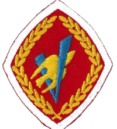
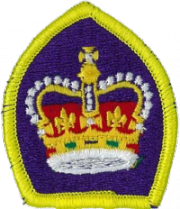

There are many awards that a venture can earn by being a part of a venture group. Click here to view the wiki page for Venture awards. The main award that ventures work towards is the Queen’s Venture award. This award is composed of the Venture award, which is in turn composed of 6 activity awards. Most of the requirements lie in the activity awards, with a few extra contained with the Venture and Queen’s Venture. It is the job of the venture to attain these requirements, with assistance and opportunities provided by the advisors and the company.
A general time period for the completion of this program is 3 years. This is just an anticipation of how much time it will take. Contained in the requirements are many things. There are some requirements that require you to create year-long programs in areas of physical fitness and of something that is of personal interest to you. 50 hours of volunteer service is also contained if you want to achieve the Queen’s Venture award. Long story short, these awards require time and planning, with lots of effort to put in. However, these awards are something that look good on a resume, and you can even get high school credits for some of them!
There is also an award that many ventures choose to complete, though it is not part of Scouts Canada. The Duke of Edinburgh award is an award that any youth can earn. There are 3 categories: Bronze, Silver, and Gold. These can be started at age 14, 15, and 16 respectively. The youth can continue to work towards any of these awards until they're 25, at which point they are no longer eligible to earn any of the 3 awards. Click here to go the the official site.